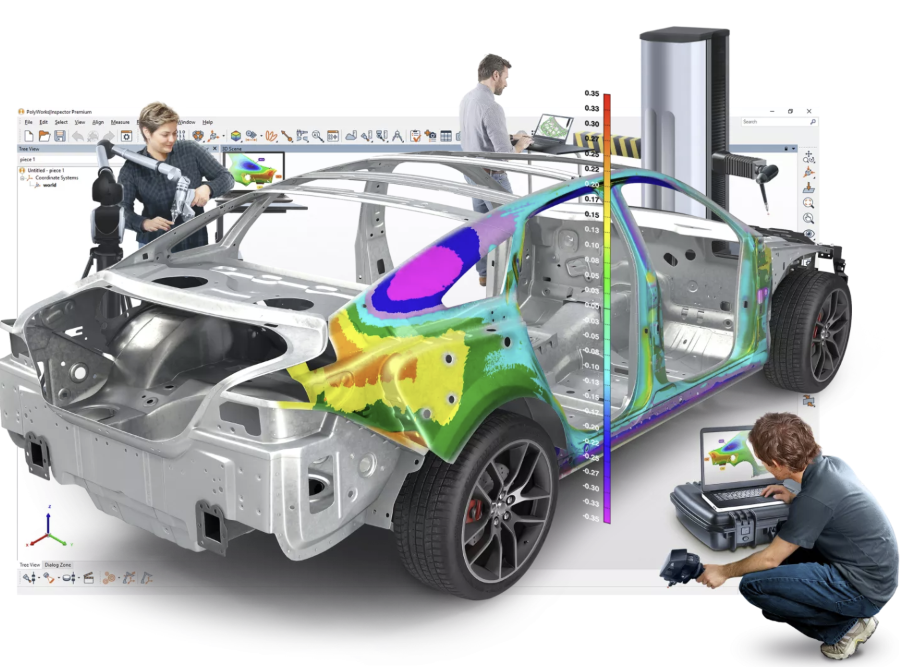
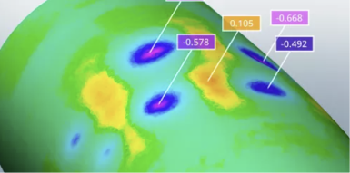
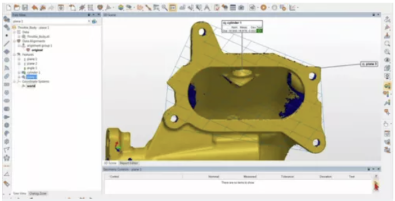

다양한 3D 측정 장비와 연결하여 측정·분석·검사·보고까지 통합하는 품질 관리 소프트웨어

3D Dimensional Analysis & Quality Control
PolyWorks|Inspector는 휴대형 측정 장비와 CNC CMM 등 다양한 3D 측정 시스템을 연결하여 금형과 부품의 치수를 관리하고, 제조 및 조립 과정의 품질 문제를 분석하는 범용 3D 계측 소프트웨어입니다.
포인트 클라우드, 프로빙 데이터, CAD 모델 및 GD&T 정보를 하나의 검사 프로젝트에서 활용하여 측정부터 결과 분석과 보고까지 연결된 품질 관리 워크플로우를 지원합니다.
서로 다른 측정 장비와 데이터를 하나의 플랫폼에서 연결하여 검사 업무의 일관성과 활용성을 높입니다.
이동형 프로빙 장비, 3D 스캐너, CNC CMM 등 다양한 측정 시스템과 연결하여 하나의 소프트웨어 환경에서 데이터를 활용할 수 있습니다.
측정 데이터와 CAD 및 GD&T 정보를 하나의 프로젝트에서 통합하여 검사와 품질 분석 업무에 활용합니다.
휴대형 계측과 CNC CMM 환경에서 일관된 검사 프로세스를 구성하여 반복적인 품질 관리 작업을 표준화할 수 있습니다.
측정 시퀀스와 검사 프로젝트를 활용하여 반복 검사 작업을 자동화하고 결과 보고 과정을 체계적으로 관리할 수 있습니다.
실제 측정 결과를 CAD 기준 데이터와 비교하여 형상 편차와 주요 치수 및 공차 상태를 분석할 수 있습니다.

측정 데이터와 기준 형상의 차이를 컬러맵으로 시각화하여 부품 전체의 편차를 직관적으로 확인합니다.

직경, 거리, 위치, 방향 등 2D 및 3D 형상 기반 치수를 측정하고 설계 기준과 비교할 수 있습니다.
ASME 및 ISO 기반 GD&T 정보를 활용하여 데이텀과 공차 영역을 포함한 기하공차 평가를 수행할 수 있습니다.
서페이스, 단면 및 측정 형상을 기준으로 측정 데이터와 설계 데이터를 정렬하여 정확한 비교와 분석을 지원합니다.
측정 장비에서 취득한 데이터를 검사 프로젝트로 구성하고, 분석 결과를 품질 관리 및 보고 업무에 활용할 수 있습니다.
스캐너, 프로브 또는 CMM으로 측정 데이터 취득
측정 데이터와 기준 CAD 데이터 정렬
치수·편차·GD&T 및 품질 상태 분석
검사 결과 정리 및 품질 보고서 활용
제품 개발부터 제조 공정과 최종 검사까지 3D 측정 데이터 기반의 품질 관리 업무를 지원합니다.
제작된 부품의 실제 형상을 측정하여 설계 데이터와 비교하고 치수 및 형상 편차를 확인합니다.
금형과 치공구의 형상을 측정하여 제작 상태와 주요 치수의 품질을 검토합니다.
조립 부품의 위치와 정렬 상태를 분석하여 제조 및 조립 과정에서 발생할 수 있는 문제를 확인합니다.
반복 측정과 검사 프로젝트를 활용하여 생산 공정의 품질 상태를 체계적으로 관리합니다.
측정 장비별로 서로 다른 소프트웨어를 사용하는 부담을 줄이고, 표준화된 검사 프로젝트와 데이터 활용 환경을 통해 품질 관리 업무의 효율성을 높일 수 있습니다.
서로 다른 3D 측정 장비의 데이터를 하나의 검사 플랫폼에서 활용할 수 있습니다.
반복적인 검사 업무를 동일한 프로젝트와 측정 프로세스로 구성하여 작업의 일관성을 높입니다.
컬러맵과 치수 결과를 활용하여 품질 상태와 주요 편차를 직관적으로 확인할 수 있습니다.
측정 및 검사 결과를 체계적으로 관리하여 제조 품질 개선과 협업 업무에 활용할 수 있습니다.
사용 중인 측정 장비와 검사 대상, 필요한 치수 분석 및 품질 관리 업무를 확인하여 적합한 소프트웨어 구성과 적용 방법을 안내해드립니다.
제품 문의하기 →